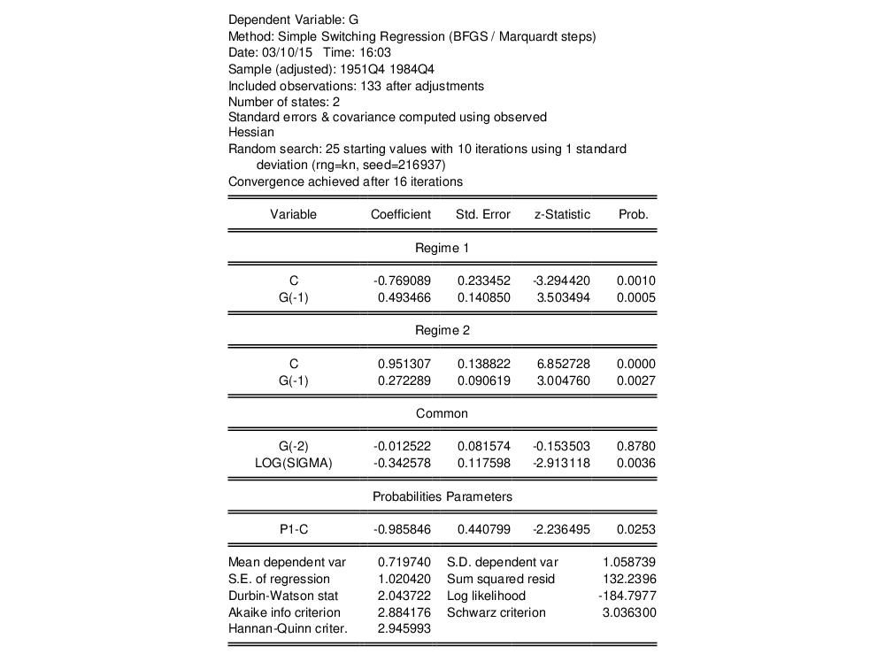

Estimation Output Estimating the equation produces the standard estimation output view. Here we see example output from a simple switching regression model, estimated using data in the workfile “GNP_hamilton.WF1”:  The top portion of the output describes the type of switching model and basic sample information, along with information about the computation of the coefficient covariance and the method of producing coefficient estimates. The middle section displays coefficient estimates. Regime specific coefficients are presented in blocks at the top, followed by any common coefficients, and then the logistic coefficients for the regime probabilities. Note that we have specified G(-1) to be a regime specific regressor, G(-2) to be common, and assume a common error variance. In this example of a simple switching model with two regimes and no probability regressors, there is only a single probability regressor. The bottom section shows the standard descriptive statistics for the equation. Most are self-explanatory. Of note are the residual-based statistics which employ the expected value of the residuals obtained by taking the sum of the regime specific residuals weighted by the one-step ahead (unfiltered) regime probabilities (Maheu and McCurdy, 2000).